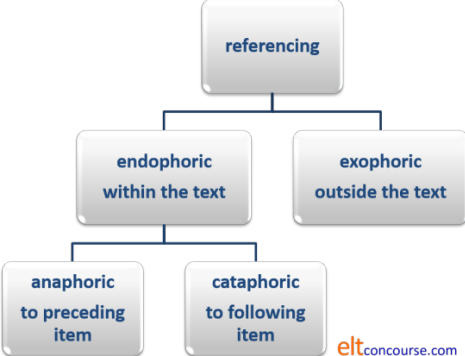
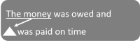
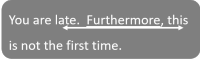
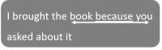
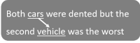
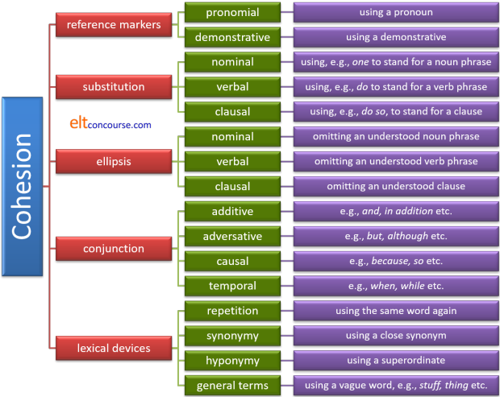

Cohesion

For the purposes of what follows and for ease of exemplification, we will focus on written texts. Don't, however, lose sight of the fact that these features occur frequently in spoken discourse, too.
 |
Cohesion vs. Coherence |
| Q: Where's
John? A: He's in the garden. |
Q: Where's
John? A: The grass needed cutting. |
Two questions:
1. Are these both comprehensible?
2. What's the difference in making them comprehensible?
Click here when you have an answer.
Yes, they are both comprehensible to the
speakers but only the first one is fully comprehensible (or
comprehensible at all) to an outsider.
The difference is that:
- In the first dialogue it is clear that He refers to John so the conversation is cohesive.
- In the second dialogue, there is no cohesion but if both people know that it is John's job to cut the grass (or go and telephone the gardener, of whatever), then the answer could mean the same. In fact, it could contain more information because the hearer might well know not just where John is but what he is doing.
The second
dialogue is coherent (it makes sense) but not cohesive.
The first dialogue is
both coherent and cohesive.
Written texts, of course, need to exhibit greater cohesion because the
writer and reader may not share information and may not be in the same
place at the same time so the reader cannot infer meaning from context.
What follows concerns cohesion.
If you want to look at written coherence, try the
guide to genre, linked
below especially the part concerning
theme-rheme
structures in texts (opens in a new tab).
Types of Cohesion in English |
In the first dialogue, above, you saw that the pronoun he referred back to the name of the person, John. That is known as anaphoric reference. It means referring back to something already mentioned.
There are other sorts of referencing which can be set out like this:

Can you identify the four main sorts of referencing in this short email?
Hi,
Thanks for that. It's going to help, I think.
By the way, I'm going to take the kids out next Monday and wondered if
you wanted to come. It'll be a long drive for them but when we get
there, I'll bet they'll love Chessington Zoo.
Let me know if you can make it.
Cheers
Click here when you have identified one example of each type of referencing.
- In the first line, there are two exophoric references to it and that. It isn't possible to know what these refer to unless you are party to the conversation.
- Arguably, the kids is another example of the same thing as the definite article is usually used to refer to already given information. In this case, the writer is assuming that the reader knows the kids in question.
- It in It'll be a long way refers anaphorically to taking the kids out.
- them and they later also refer anaphorically to the kids. The kids have already been mentioned in the text so these two references are endophoric as well.
- Finally, there refers cataphorically to Chessington Zoo and is also endophoric.
There is an additional type of exophoric referencing, not
exemplified here, which is called homophoric.
It occurs when reference is to something outside the text and relies
on the hearer / writer's knowledge of the cultural or social setting
for its understanding. So for example:
We're going to the zoo
will be understood in many cultural, national or regional
settings to refer only to a particular zoo known to both parties to
the exchange, regardless of the fact that there are many zoos in the
world.
 |
Five ways to establish and maintain cohesion |
The following draws heavily on Halliday and Hasan (1976) as does
much else in this area of study.
We'll take each of the categories they identified and exemplify them
with short written or spoken texts.
- References and referents
- The reference is the item doing the
pointing in a text, the referent is the item to
which it directs the hearer or reader.
The most common ways by far to achieve this type of cohesion is to use the English pronoun system, in particular, personal and demonstrative pronouns, but others, such as the former, the other etc. which work similarly, are also encountered.
Here are simple examples or two of the most common ways references and referents are used:- Personal pronoun referencing (anaphoric):

Personal pronoun referencing (cataphoric):
- Demonstrative pronoun referencing (anaphoric):

Demonstrative pronoun referencing (cataphoric):

- Personal pronoun referencing (anaphoric):
- Substitution
- Substitution is the replacement of an item with something
which refers to it and is often (as we see above) a simple
pronoun reference. It may, however, be more complex so it
gets its own category.
Here are three examples of the system at work:- Nominal clause substitution:

- Verbal substitution:

- Clausal substitution:
- Nominal clause substitution:
- Ellipsis
- Involves, as the name suggests, simply omitting the referent
and relying on context and co-text for the sense to be clear to
the hearer (usually) or writer (rarely).
Here are three examples of the system at work with the white triangle indicating where the item it omitted:- Nominal clause ellipsis:
 - Verb ellipsis:

- Clausal ellipsis:
- Nominal clause ellipsis:
- Conjunction
- We'll consider four types only here (although there are more
in the guides to the areas). This area also includes the
use of conjuncts which lie outside the clause structure.
- Additive conjunct:
 - Adversative conjunction:
- Clausal conjunction:
 - Temporal conjunction:

- Additive conjunct:
- Lexical cohesion
- This is a varied category and refers to how lexical choices
act to make a text cohere. It is most obvious in written
texts because there are usually three or so topic areas which
form threads of connected ideas through the text.
- Repetition:
- Synonym:

- Hyponym:
- Superordinate or hypernym:
 - General term (vague):

- Repetition:
Most of the examples above are, or could be, in spoken texts so now, to balance things, we'll turn to a written text.
 |
An example text |
| a letter to a newspaper |
For this section, you need to download the sample text which is used to exemplify the discussion. Save / print the text or have it open in a new tab to refer to as we go along.
This is not a complete analysis of the text but in the following table, the key types of referencing and examples from the text are identified.
| Type of cohesion | Specifically | Explanation | Example |
| REFERENCE MARKERS | PRONOMIAL | Using a pronoun to refer to a noun | Line 3 – it refers to the council |
| DEMONSTRATIVE PRONOUN | Use this, that, these etc. to refer to a noun or clause | Line 5 – that refers to the council's position | |
| SUBSTITUTION | NOMINAL | Using a word to 'stand for' the longer noun | Line 7 – one refers to area of the town. |
| VERBAL | Doing the same to 'stand for' a verb | Line 16 – do replaces encourage | |
| CLAUSAL | Doing the same to 'stand for' a clause | Line 22 – do so replaces use the town's facilities | |
| ELLIPSIS | NOMINAL | Leaving out a noun which is understood | Line 20 – the service is not repeated for the second verb is reduced |
| VERBAL | Leaving out a verb which is understood | Line 4/5 – is suggesting is not repeated | |
| CLAUSAL | Leaving out a clause which is understood | Line 18 – the sentences stops at not, without repeating have access to etc. | |
| CONJUNCTION: | ADDITIVE | Adding something of equal merit | Line 22 – and Line 19 – What's more (and lots more!) |
| ADVERSATIVE | Adding a contrast | Line 16 – but | |
| CAUSAL | Adding a reason | Line 21 – therefore | |
| TEMPORAL | Time related linkage | Line 12 – After | |
| LEXICAL COHESION: | SAME ITEM | Using the same word | council is repeated often |
| SYNONYM OR HYPONYM | Using a related word | public transport and bus service | |
| SUPERORDINATE | Using a more general term to cover a range | facilities is used to refer to shops, offices, banks etc. | |
| ‘GENERAL’ ITEM | Usually a vague generalised word | Line 31 – exercises |
Notice, too, the expression in the same boat (line 27) which substitutes for almost everything in the letter.
 |
Shell nouns: another source of cohesion |
This guide is about cohesion and mostly focuses on the ways in
which it is achieved via referencing and connective devices.
There is, however, an additional lexical trick in most
languages through which entire texts and sets of propositions can be
effectively linked through the use of shell nouns.
These are discussed at a greater level of detail in the guide to
them, linked below, so here we will just cite more or less what is
said in the guide to nouns in general to give you a flavour of how
they operate to increase internal cohesion in texts.
Briefly, what shell nouns do is to
encapsulate ideas in a way that makes the noun itself the shell for
a set of propositions. For example in:
The problem is that too many vehicles use the new bypass causing congestion at peak times so the aim is to limit the traffic by improving and extending alternative routes through the suburbs.
we have two shell nouns, problem
and aim which respectively
encapsulate the propositions of identifying an issue and seeking a
solution.
The shell noun is usually followed by the proposition that it
encapsulates linked either with a that-clause (problem)
or just a simple copula such as be (aim).
Shell nouns fall into recognisable categories which are explained
and exemplified in the guide to them. They include, for
example, nouns such as:
ability, advantage, aim, aspect, belief, capacity, context, danger, difference, doubt, drawback, effort, event, fact, idea, knowledge, mistake, mystery, need, opportunity, part, permission, place, plan, position, possibility, priority, problem, problem, procedure, proof, question, reality, reason, result, sign, similarity, situation, situation, solution, struggle, theory, time, trouble, truth, view, way, worry
The use of shell nouns is particularly common is some kinds of
academic texts in which the author is concerned to set up a series
of propositions under an overall heading of, e.g., reason,
problem, theory, outcome, necessity and so on.
In terms of cohesion, you can see the efficacy of using shell nouns
by comparing these two short texts:
- People in the organisation are spending too much duplicating work that is being done in other departments leading to unfocused activity and often to internal contradictions. This must be addressed by setting out clearer definitions of people's roles. It can be tackled in one of three ways ...
- People in the organisation are spending too much duplicating work that is being done in other departments leading to unfocused activity and often to internal contradictions. This wasteful duplication must be addressed by setting out clearer definitions of people's roles. It can be tackled in one of three ways ...
It should be clear that in the second version, the issue is
discussed within a noun shell, the expression wasteful
duplication, which is quite specific and more carefully defined
than it would be with the use of a more generalised shell noun such
as problem.
In the first version, the use of it in the final sentence is
potentially confusing because the reader is left to surmise what the
referent might be. In the second version, because we have a
shell noun, it is quite clear what it refers to: wasteful duplication.
That means that the writer can thereafter refer to the whole
set of propositions with a simple pronouns, this, that or it,
used to refer to the wasteful duplication rather than vaguely
pointing at something in the text.
It also means that the text hangs together much more successfully
because the reader is aware of exactly what is being discussed.
In other words, cohesion is achieved.
If you would like a list of potential shell nouns,
click here.
Here's a diagrammatic way to show what resources are available to
maintain and construct cohesion:

You may find all of the above referred to as discourse markers
and some of them are. However, properly understood, the term
discourse marker applies to an item used to manage spoken
interaction so things like:
Yes, I see your point but ...
Well, for a start ...
Do you see?
etc. are discourse markers which contribute to coherent exchanges.
On this site, we avoid the term discourse marker except in this
narrower sense and prefer cohesive device for the items we are
concerned with in this guide.
 |
The role of articles |
There are three ways that article use contributes to cohesion and referencing.
- The first time a noun is mentioned, it is usually preceded (if
it is countable) by the indefinite article. The second time by
the definite article, signalling to the reader / hearer that the
reference is to a known item. For example,
A strange car was parked outside my house. It's difficult to find a parking space in my street so I hoped the car wouldn't be there later.
In that example, the use of the car later signals that it is a known entity and refers to the same car. - Note however, that we can use the definite article to signal the
only possible entity as in, e.g.:
A car drew up and the driver got out.
In this case, the definite article signals to the reader / hearer that it is the driver of a particular car, not just any driver.
Consider the oddness of:
A car drew up and a driver got out
but the acceptability of:
A car drew up and a passenger got out - The definite article may also refer to something outside the
text which is known to both speaker / writer and reader / hearer because
they share a common cultural or social milieu. For example,
The minister has replied to our letter
Now, minister can mean a politician or a member of the clergy and there are probably many thousands of them around the world. It is clear, however, from the use of the definite article that a particular minister, known to both participants in the discourse, is meant here.
Another example, of what is called homophoric reference is to entities such as the government, the Queen, the President, the Czar etc. when knowledge of the culture precludes any other meaning.
Exophoric referencing cannot, technically, be called cohesive because it does not connect items in the text. It is, however, a potential barrier to understanding and makes the text coherent.
 |
What is being connected? |
Mention is briefly made above to theme-rheme structures and
here's a little more on that, erm, theme.
There are three types of theme that contribute to cohesion in texts,
whether written or spoken:
- Topical themes
are the most familiar and concern us in what follows. They refer to the subject of the verb usually so in, for example:
The washing machine in the basement has broken down
the noun phrase The washing machine in the basement is the topical theme and the rest of the sentence constitutes the rheme.
The topical theme is not always the subject of the verb, however, so we can also have, e.g., with the topical themes highlighted:
It was John she gave the money to
The clothes have been washed
Money, that's what we need
Topical themes are often fronted but may be post-positioned as in the first of those examples. - Textual themes
serve directly to link items together and in this guide we have been referring to them as conjunctions and conjuncts. Additionally, wh-words can form textual themes. The textual themes are highlighted in these examples:
Mary spoke to him as soon as she arrived.
He was, however, not really listening
Why was that? - Interpersonal themes
concern the interactions between speakers (usually) and signal the speaker's opinions and viewpoints. They are highlighted in these examples:
She might get upset
I think she's going to
In most cases, interpersonal themes do not contribute specifically to cohesion but they are powerful drivers of coherence in texts.
This is important because, although we may know what forms of cohesion there are in English, unless we know what to connect with what, the picture is incomplete and the knowledge is unused (and useless). The analysis of theme-rheme structures allows us to identify where and to what references should be made, in other words.
There is a separate guide to theme-rheme structures on this site, linked below, where you should go for more detail but, briefly, the theme is the jumping off point for the clause and what follows it is the rheme. That rheme often forms the theme of the next clause with a new rheme which, in turn forms the theme of a subsequent clause. The structure of this form of cohesion can be exemplified like this:
Mary came to the party and she brought her brother. He turned out to be an interesting person because he worked in television with some quite famous people. They included some of my favourite personalities.
In which we have:
- The first theme (Mary) with its rheme (came to the party) and then the theme repeated, with linking additive coordination (and) and pronoun substitution (she) with a new rheme brought her brother.
- That rheme forms the theme of the next clause (turned out to be an interesting person) which is connected by subordination (because) with the next pronoun substitution (he) with its rheme (worked in television with some quite famous people).
- That rheme becomes the next theme (they) which has the rheme included some of my favourite personalities.
And so on. We would expect at some time that my
favourite personalities
will become the topical theme of another clause which will have its own rheme.
It not always as straightforward as this, of course, because rhemes
do not always immediately (or ever) become themes and may have to
wait a little before, say, Rheme 3 becomes Theme 8. More on
this is in the guide.
It looks like this, with the cohesive links (both topical and
textual) underlined (and a
diagram is often a good way to present the structure in a
classroom).

The moral is that teaching people how to make texts cohesive without teaching what items need cohesive links is a waste of valuable time.
| Related guides | |
| articles | for more on article use |
| substitution and ellipsis | for more about how these are used to maintain cohesion |
| deixis | for a more technical guide to the area |
| pro-forms | for more on pronouns and more |
| synonymy | for more on this and related concepts such as simile and metaphor |
| subordination and coordination | for the introductory guide to these areas and links for more |
| genre | for a general guide to the area which considers coherence in mo0re detail |
| theme and rheme | for the guide to the area |
| shell nouns | for the guide to a useful lexical cohesion device that is often under exploited in classrooms |
| discourse guides | the in-service index to this area (including genre and theme-rheme structures) |
Reference:
Nothing in this area is complete without reference to
Halliday MAK & Hasan R, 1976, Cohesion in English,
Harlow: Longman